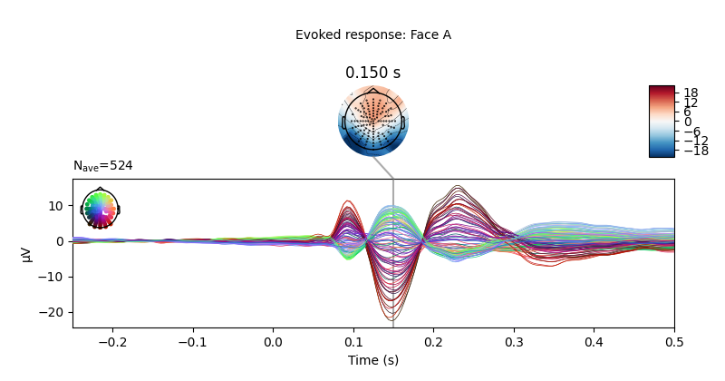
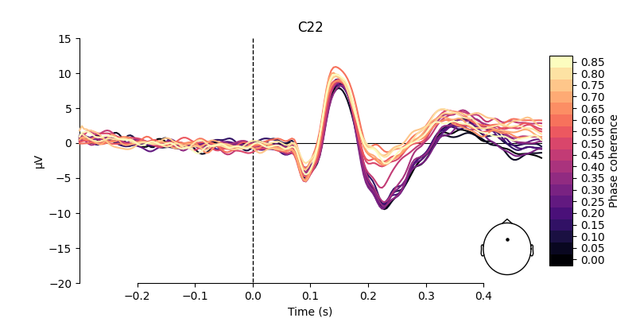
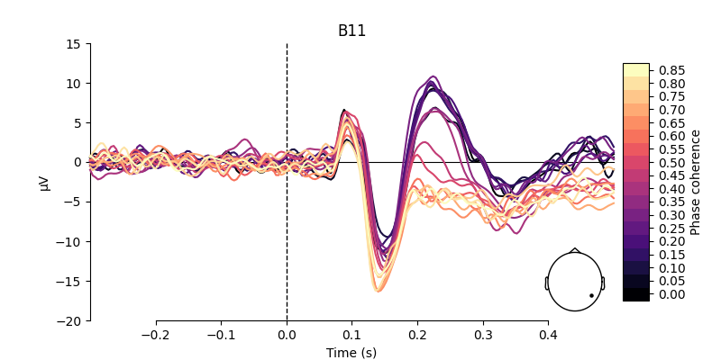

Note
Click here to download the full example code
Single trial linear regression analysis with the LIMO dataset¶
Here we explore the structure of the data contained in the LIMO dataset. This example replicates and extends some of the main analysis and tools integrated in LIMO MEEG, a MATLAB toolbox originally designed to interface with EEGLAB.
In summary, the example:
Fetches epoched data files for a single subject of the LIMO dataset 1. If the LIMO files are not found on disk, the fetcher
mne.datasets.limo.load_data()will automatically download the files from a remote repository.During import, information about the data (i.e., sampling rate, number of epochs per condition, number and name of EEG channels per subject, etc.) is extracted from the LIMO
.matfiles stored on disk and added to the epochs structure as metadata.Fits linear models on the single subject’s data and visualizes inferential measures to evaluate the significance of the estimated effects.
# Authors: Jose C. Garcia Alanis <alanis.jcg@gmail.com>
#
# License: BSD (3-clause)
import numpy as np
import matplotlib.pyplot as plt
from mne.datasets.limo import load_data
from mne.stats import linear_regression
from mne.viz import plot_events, plot_compare_evokeds
from mne import combine_evoked
print(__doc__)
# subject to use
subj = 1
About the data¶
In the original LIMO experiment (see 2), participants performed a two-alternative forced choice task, discriminating between two face stimuli. The same two faces were used during the whole experiment, with varying levels of noise added, making the faces more or less discernible to the observer (see Fig 1 in 3 for a similar approach).
The presented faces varied across a noise-signal (or phase-coherence) continuum spanning from 0 to 85% in increasing steps of 5%. In other words, faces with high phase-coherence (e.g., 85%) were easy to identify, while faces with low phase-coherence (e.g., 5%) were hard to identify and by extension very hard to discriminate.
Load the data¶
We’ll begin by loading the data from subject 1 of the LIMO dataset.
# This step can take a little while if you're loading the data for the
# first time.
limo_epochs = load_data(subject=subj)
Out:
Adding metadata with 2 columns
Replacing existing metadata with 2 columns
1055 matching events found
No baseline correction applied
0 projection items activated
0 bad epochs dropped
Note that the result of the loading process is an
mne.EpochsArray containing the data ready to interface
with MNE-Python.
print(limo_epochs)
Out:
<EpochsArray | 1055 events (all good), -0.299944 - 0.499907 sec, baseline off, ~213.7 MB, data loaded, with metadata,
'Face/A': 524
'Face/B': 531>
Visualize events¶
We can visualise the distribution of the face events contained in the
limo_epochs structure. Events should appear clearly grouped, as the
epochs are ordered by condition.
fig = plot_events(limo_epochs.events, event_id=limo_epochs.event_id)
fig.suptitle("Distribution of events in LIMO epochs")

As it can be seen above, conditions are coded as Face/A and Face/B.
Information about the phase-coherence of the presented faces is stored in the
epochs metadata. These information can be easily accessed by calling
limo_epochs.metadata. As shown below, the epochs metadata also contains
information about the presented faces for convenience.
print(limo_epochs.metadata.head())
Out:
face phase-coherence
0 A 0.491210
1 A -1.235572
2 A -1.043707
3 A 1.642398
4 A -0.659978
Now let’s take a closer look at the information in the epochs metadata.
# We want include all columns in the summary table
epochs_summary = limo_epochs.metadata.describe(include='all').round(3)
print(epochs_summary)
Out:
face phase-coherence
count 1055 1055.000
unique 2 NaN
top B NaN
freq 531 NaN
mean NaN -0.000
std NaN 1.000
min NaN -1.619
25% NaN -0.852
50% NaN -0.084
75% NaN 0.875
max NaN 1.642
The first column of the summary table above provides more or less the same
information as the print(limo_epochs) command we ran before. There are
1055 faces (i.e., epochs), subdivided in 2 conditions (i.e., Face A and
Face B) and, for this particular subject, there are more epochs for the
condition Face B.
In addition, we can see in the second column that the values for the phase-coherence variable range from -1.619 to 1.642. This is because the phase-coherence values are provided as a z-scored variable in the LIMO dataset. Note that they have a mean of zero and a standard deviation of 1.
Visualize condition ERPs¶
Let’s plot the ERPs evoked by Face A and Face B, to see how similar they are.
# only show -250 to 500 ms
ts_args = dict(xlim=(-0.25, 0.5))
# plot evoked response for face A
limo_epochs['Face/A'].average().plot_joint(times=[0.15],
title='Evoked response: Face A',
ts_args=ts_args)
# and face B
limo_epochs['Face/B'].average().plot_joint(times=[0.15],
title='Evoked response: Face B',
ts_args=ts_args)
- 
Out:
No projector specified for this dataset. Please consider the method self.add_proj.
No projector specified for this dataset. Please consider the method self.add_proj.
We can also compute the difference wave contrasting Face A and Face B. Although, looking at the evoked responses above, we shouldn’t expect great differences among these face-stimuli.
# Face A minus Face B
difference_wave = combine_evoked([limo_epochs['Face/A'].average(),
limo_epochs['Face/B'].average()],
weights=[1, -1])
# plot difference wave
difference_wave.plot_joint(times=[0.15], title='Difference Face A - Face B')
Out:
No projector specified for this dataset. Please consider the method self.add_proj.
As expected, no clear pattern appears when contrasting Face A and Face B. However, we could narrow our search a little bit more. Since this is a “visual paradigm” it might be best to look at electrodes located over the occipital lobe, as differences between stimuli (if any) might easier to spot over visual areas.
# Create a dictionary containing the evoked responses
conditions = ["Face/A", "Face/B"]
evokeds = {condition: limo_epochs[condition].average()
for condition in conditions}
# concentrate analysis an occipital electrodes (e.g. B11)
pick = evokeds["Face/A"].ch_names.index('B11')
# compare evoked responses
plot_compare_evokeds(evokeds, picks=pick, ylim=dict(eeg=(-15, 7.5)))

We do see a difference between Face A and B, but it is pretty small.
Visualize effect of stimulus phase-coherence¶
Since phase-coherence determined whether a face stimulus could be easily identified, one could expect that faces with high phase-coherence should evoke stronger activation patterns along occipital electrodes.
phase_coh = limo_epochs.metadata['phase-coherence']
# get levels of phase coherence
levels = sorted(phase_coh.unique())
# create labels for levels of phase coherence (i.e., 0 - 85%)
labels = ["{0:.2f}".format(i) for i in np.arange(0., 0.90, 0.05)]
# create dict of evokeds for each level of phase-coherence
evokeds = {label: limo_epochs[phase_coh == level].average()
for level, label in zip(levels, labels)}
# pick channel to plot
electrodes = ['C22', 'B11']
# create figures
for electrode in electrodes:
fig, ax = plt.subplots(figsize=(8, 4))
plot_compare_evokeds(evokeds,
axes=ax,
ylim=dict(eeg=(-20, 15)),
picks=electrode,
cmap=("Phase coherence", "magma"))
- 
- 
As shown above, there are some considerable differences between the activation patterns evoked by stimuli with low vs. high phase-coherence at the chosen electrodes.
Prepare data for linear regression analysis¶
Before we test the significance of these differences using linear regression, we’ll interpolate missing channels that were dropped during preprocessing of the data. Furthermore, we’ll drop the EOG channels (marked by the “EXG” prefix) present in the data:
limo_epochs.interpolate_bads(reset_bads=True)
limo_epochs.drop_channels(['EXG1', 'EXG2', 'EXG3', 'EXG4'])
Out:
Interpolating bad channels
Automatic origin fit: head of radius 95.0 mm
Computing interpolation matrix from 113 sensor positions
Interpolating 15 sensors
Define predictor variables and design matrix¶
To run the regression analysis,
we need to create a design matrix containing information about the
variables (i.e., predictors) we want to use for prediction of brain
activity patterns. For this purpose, we’ll use the information we have in
limo_epochs.metadata: phase-coherence and Face A vs. Face B.
# name of predictors + intercept
predictor_vars = ['face a - face b', 'phase-coherence', 'intercept']
# create design matrix
design = limo_epochs.metadata[['phase-coherence', 'face']].copy()
design['face a - face b'] = np.where(design['face'] == 'A', 1, -1)
design['intercept'] = 1
design = design[predictor_vars]
Now we can set up the linear model to be used in the analysis using
MNE-Python’s func:linear_regression function.
reg = linear_regression(limo_epochs,
design_matrix=design,
names=predictor_vars)
Out:
Fitting linear model to epochs, (25728 targets, 3 regressors)
Done
Extract regression coefficients¶
The results are stored within the object reg,
which is a dictionary of evoked objects containing
multiple inferential measures for each predictor in the design matrix.
Out:
predictors are: ['face a - face b', 'phase-coherence', 'intercept']
fields are: ['beta', 'stderr', 't_val', 'p_val', 'mlog10_p_val']
Plot model results¶
Now we can access and plot the results of the linear regression analysis by
calling reg['<name of predictor>'].<measure of interest> and
using the
plot_joint() method just as we would do with any other
evoked object.
Below we can see a clear effect of phase-coherence, with higher
phase-coherence (i.e., better “face visibility”) having a negative effect on
the activity measured at occipital electrodes around 200 to 250 ms following
stimulus onset.
Out:
No projector specified for this dataset. Please consider the method self.add_proj.
We can also plot the corresponding T values.
# use unit=False and scale=1 to keep values at their original
# scale (i.e., avoid conversion to micro-volt).
ts_args = dict(xlim=(-0.25, 0.5),
unit=False)
topomap_args = dict(scalings=dict(eeg=1),
average=0.05)
fig = reg['phase-coherence'].t_val.plot_joint(ts_args=ts_args,
topomap_args=topomap_args,
times=[0.23])
fig.axes[0].set_ylabel('T-value')
Out:
No projector specified for this dataset. Please consider the method self.add_proj.
Conversely, there appears to be no (or very small) systematic effects when comparing Face A and Face B stimuli. This is largely consistent with the difference wave approach presented above.
Out:
No projector specified for this dataset. Please consider the method self.add_proj.
References¶
- 1
Guillaume A. Rousselet. LIMO EEG dataset. 2016. doi:10.7488/ds/1556.
- 2
Guillaume A. Rousselet, Carl M. Gaspar, Cyril R. Pernet, Jesse S. Husk, Patrick J. Bennett, and Allison B. Sekuler. Healthy aging delays scalp EEG sensitivity to noise in a face discrimination task. Frontiers in Psychology, 1(19):1–14, 2010. doi:10.3389/fpsyg.2010.00019.
- 3
Guillaume A. Rousselet, Cyril R. Pernet, Patrick J. Bennett, and Allison B. Sekuler. Parametric study of EEG sensitivity to phase noise during face processing. BMC Neuroscience, 9(1):98, 2008. doi:10.1186/1471-2202-9-98.
Total running time of the script: ( 0 minutes 35.226 seconds)
Estimated memory usage: 627 MB